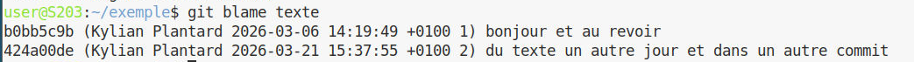
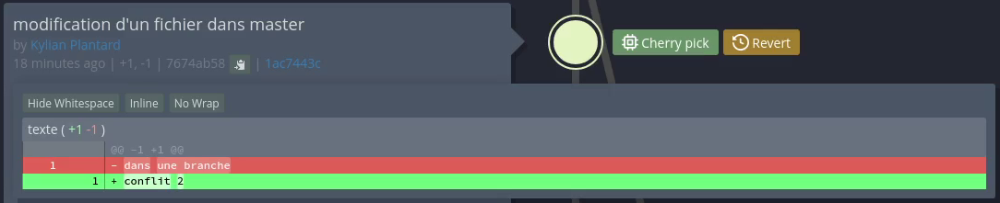

1. Semaine 7 : Tutoriel - Préparation de la machine virtuelle et OS de base
Auteurs : Lefebvre Romain, Plantard Kylian, Belot Emilien
|
Présentation |
1.1. 1. Création de la machine virtuelle dans VirtualBox
La première étape consiste à préparer le "matériel virtuel" qui va accueillir notre serveur. Dans VirtualBox, nous avons cliqué sur "Nouvelle" et configuré la machine selon le cahier des charges :
-
Nom de la machine :
s2.03 -
Type de système : Linux / Debian (64-bit)
-
Mémoire vive (RAM) : 2048 Mo (C’est le minimum recommandé pour faire tourner l’environnement graphique MATE de manière fluide sans saturer la partition d’échange).
-
Disque dur : 20 Go (alloué dynamiquement, avec une seule partition contenant tout le système).
-
Réseau : Laissé par défaut sur "NAT", ce qui permet à la machine d’avoir accès à Internet tout en étant protégée et isolée du réseau physique de l’IUT.

1.2. 2. Installation de l’OS de base (Debian 13)
Une fois la machine créée, nous y avons inséré l’image disque (ISO) de Debian et lancé l’installation graphique. Les choix cruciaux lors de cette étape ont été :
-
Le nom d’hôte : Défini sur
serveur. -
Le miroir réseau : Nous avons utilisé le miroir local de le plus proche
http://debian.polytech-lille.frpour accélérer le téléchargement des paquets. -
Les utilisateurs :
-
Un mot de passe robuste a été défini pour l’administrateur (
root). -
Un compte utilisateur standard nommé
usera été créé pour l’utilisation standard.
-
-
La sélection des logiciels (Tasksel) : Nous avons décoché l’environnement GNOME (trop lourd) pour choisir MATE (plus léger). Nous avons également coché le serveur Web et le serveur SSH pour nos futurs besoins réseau.

1.3. 3. Configuration post-installation et Suppléments invités
Une fois le système installé et redémarré, plusieurs configurations manuelles ont été nécessaires pour rendre la machine parfaitement utilisable :
A. Ajout des droits d’administration (sudo)
L’utilisateur user ne pouvait pas exécuter de commandes administrateur. Nous avons basculé sur la console texte (tty1 via Ctrl+Alt+F1), nous nous sommes connectés en root, et avons tapé la commande suivante :
usermod -aG sudo userman 8 usermod [1]
B. Installation des Additions Invité (Guest Additions)
Pour activer le redimensionnement dynamique de la fenêtre et le presse-papiers partagé, nous avons inséré le CD virtuel des suppléments depuis le menu VirtualBox, puis l’avons monté et exécuté dans le terminal :
sudo mount /dev/cdrom /mnt
sudo /mnt/VBoxLinuxAdditions.runman 8 mount [2]
Un redémarrage a suffi pour appliquer ces changements.
1.4. 4. Automatisation de l’installation (Preseed)
Pour ne pas avoir à refaire ces étapes manuellement, nous avons modifié le fichier de configuration automatisée preseed-fr.cfg présent sur l’ISO fournie.
Nous y avons imposé l’installation de l’environnement MATE :
d-i tasksel/first multiselect standard, mate-desktopNous avons ajouté les paquets supplémentaires demandés pour la SAÉ :
d-i pkgsel/include string sudo git sqlite3 curl bash-completion fastfetchEnfin, pour que l’utilisateur soit directement dans le groupe sudo à l’installation, nous avons modifié cette ligne :
-d-i passwd/user-default-groups string audio cdrom video
+d-i passwd/user-default-groups string audio cdrom video sudo1.5. 5. Retour d’expérience et difficultés rencontrées
-
Problème de connexion SSH : En voulant tester la commande
ssh user@10.0.2.15depuis notre machine hôte, la connexion échouait indéfiniment (Timeout). Après diagnostic, nous avons compris que le réseau NAT de VirtualBox agissait comme un routeur bloquant les connexions entrantes. -
La solution : Nous avons dû configurer manuellement une règle de "Redirection de ports" (Port Forwarding) dans les paramètres réseau de VirtualBox (Port hôte 2222 vers Port invité 22) pour que la connexion réussisse.
2. Semaine 10 : Tutoriel - Utilisation de Git et travail collaboratif
Auteurs : Lefebvre Romain, Plantard Kylian, Belot Emilien
|
Présentation |
2.1. 1. Configuration globale et initialisation
Avant de commencer à versionner notre code, nous avons dû configurer notre identité sur notre machine pour que nos futurs commits nous soient bien attribués :
git config --global user.name "Prénom Nom"
git config --global user.email "prenom.nom@etu.univ-lille.fr"Elles ne sont évidemment à faire qu’une fois par machine, et pas à chaque projet. Si l’email est différent que celui du compte, les commits ne seront pas associés au profil.
Ensuite, nous avons créé un dossier de travail et initialisé un nouveau dépôt Git local vierge à l’intérieur :
mkdir projet-sae
cd projet-sae
git init2.2. 2. Manipulations locales (Add, Commit, Log)
Nous avons créé plusieurs fichiers et enregistré notre progression à travers des "commits" (des instantanés de notre projet).
touch fichier1 fichier2 fichier3 fichier4
git add fichier1
git commit -m "ajout du premier fichier"
git add fichier2
git commit -m "ajout du second fichier"
git add fichier3 fichier4
git commit -m "ajout du fichier 3 et 4"Pour vérifier que tout a bien été enregistré, nous avons utilisé la commande git log :
git log
2.3. 3. Comparaison de versions avec git diff
Nous avons utilisé git diff pour comparer deux commits. Voici un exemple de sortie obtenue :
diff --git a/texte b/texte
index 9d600a1..7255def 100644
--- a/texte
+++ b/texte
@@ -1 +1 @@
-dans une branche
+conflit 1Les premières lignes indiquent les fichiers comparés (a/texte et b/texte) et les méta-données de la comparaison (index 9d600a1..7255def). Les lignes précédées d’un - en rouge sont des suppressions et celles avec un + en vert sont des ajouts. Les autres lignes affichées servent de contexte autour du code modifié.
2.4. 4. Gestion des branches et fusions (Merge)
Pour développer une fonctionnalité sans casser le code principal, nous avons créé une branche parallèle nommée exemple. Comme on peut le voir sur notre capture d’écran, nous avons utilisé la commande git checkout pour créer cette branche et basculer dessus, puis nous l’avons fusionnée (merge) avec la branche principale (master) :
git checkout -b exemple
# ... modifications et commits ...
git checkout master
git merge exemple
|
|
2.5. 5. Résolution de conflits
Un conflit de fusion survient lorsque deux branches modifient le même fichier de façon différente. Lors de la fusion, Git met le processus en pause et demande une résolution manuelle. En ouvrant le fichier en conflit avec l’éditeur nano, nous avons vu les balises insérées par Git :
<<<<<<< HEAD
conflit 1
=======
conflit 2
>>>>>>> conflit
Pour le résoudre, on modifie le fichier (choisir le code à garder et supprimer les marqueurs de conflit) puis on fait un git add pour le marquer comme résolu, avant de faire un commit de fusion.
2.6. 6. Le fichier .gitignore
Pour éviter que Git ne suive des fichiers inutiles (comme des fichiers compilés Java), nous avons créé un fichier .gitignore à la racine de notre projet:
*.class
*.jar2.7. 7. Travail collaboratif sur GitLab
Pour travailler en équipe, nous avons utilisé un dépôt distant sur GitLab. Nous avons d’abord généré une clé SSH (ssh-keygen -t ed25519 -C "exemple@univ-lille.fr") que nous avons ajoutée à notre profil GitLab pour l’authentification.
Nous avons cloné le projet :
git clone git@gitlab-ssh.univ-lille.fr:notthedreamteam/exemple-sae203.gitChaque membre a ensuite créé sa propre branche, ajouté un fichier, et poussé son travail sur le serveur :
git switch --create emilien
echo "encore du texte" > encore_un_fichier
git add encore_un_fichier
git commit -m "ajoute encore_un_fichier"
git push --set-upstream origin emilienEnfin, sur l’interface web de GitLab, nous avons créé des "Merge Requests" pour fusionner le travail de chacun dans la branche principale. Nous n’avons pas eu de conflits car nous n’avons pas modifié les mêmes fichiers.
Traçabilité avec git blame
Pour aller plus loin dans le suivi de notre travail collaboratif, nous avons testé la commande git blame sur l’un de nos fichiers.
git blame nom_du_fichier
Cette commande s’est révélée très puissante : elle affiche le contenu du fichier ligne par ligne en indiquant, pour chaque ligne, le nom de l’auteur, la date et l’identifiant (hash) du dernier commit l’ayant modifiée.
2.8. 8. Utilisation d’une interface graphique (Ungit)
Bien que la ligne de commande soit rapide, nous avons testé une interface graphique web nommée Ungit. Après avoir installé Node.js et npm sur le système, nous l’avons installé via la commande globale : sudo -H npm install -g ungit. Ensuite, il se lance en tapant ungit et s’ouvre directement sous forme d’onglet dans le navigateur web.

Ungit est extrêmement visuel. Par exemple, pour comparer deux versions d’un fichier (l’équivalent de git diff), il suffit de cliquer sur le nœud correspondant:

L’interface graphique s’est révélée très pratique pour visualiser un historique complexe et comprendre la topologie des branches, tandis que la ligne de commande reste notre outil privilégié pour les opérations rapides du quotidien (add, commit, push).
2.9. 9. Retour d’expérience et difficultés rencontrées
-
Le fonctionnement des clés SSH : Au début du travail collaboratif, nous avions des erreurs de permission (
Permission denied (publickey)). Nous avons dû bien comprendre la différence entre clé privée (qui reste sur le PC) et clé publique (à donner à GitLab) pour résoudre le problème. -
La panique du conflit de fusion : Lors de notre premier conflit, voir le fichier rempli de chevrons
<<<<<<<a été perturbant. Nous avons d’abord cru avoir cassé le code. Comprendre qu’il s’agissait simplement de texte à nettoyer manuellement dans un éditeur nous a beaucoup rassurés pour la suite du projet.
3. Semaine 11 : Tutoriel - Installation de Forgejo
Auteurs : Lefebvre Romain, Plantard Kylian, Belot Emilien
|
Présentation |
3.1. 1. Installation du binaire et configuration de l’utilisateur système
Pour commencer, nous avons téléchargé le binaire de Forgejo, créé un utilisateur système dédié (git) sans mot de passe, préparé les dossiers nécessaires, puis configuré et lancé le service via les commandes suivantes :
wget https://codeberg.org/forgejo/forgejo/releases/download/v14.0.3/forgejo-14.0.3-linux-amd64
sudo cp forgejo-14.0.3-linux-amd64 /usr/local/bin/forgejo
sudo chmod 755 /usr/local/bin/forgejo
sudo adduser --system --shell /bin/bash --gecos 'Git Version Control' --group --disabled-password --home /home/git git
sudo mkdir /var/lib/forgejo
sudo chown git:git /var/lib/forgejo && sudo chmod 750 /var/lib/forgejo
sudo wget -O /etc/systemd/system/forgejo.service https://codeberg.org/forgejo/forgejo/raw/branch/forgejo/contrib/systemd/forgejo.service
sudo systemctl daemon-reload
sudo systemctl enable forgejo.service
sudo systemctl start forgejo.service
# installation sur localhost:3000
sudo systemctl stop forgejo.service
sudo chmod 750 /etc/forgejo && sudo chmod 640 /etc/forgejo/app.ini3.2. 2. Choix de la base de données et de l’architecture réseau
Pour la base de données, nous avons choisi SQLite, une base de données orientée fichier, ultra-légère et ne nécessitant aucune configuration de serveur (pas de service supplémentaire à faire tourner ou à sécuriser). Le fichier se trouve dans le répertoire de travail de l’application. Le propriétaire de ce fichier est l’utilisateur système qui exécute le service Forgejo (git), afin qu’il puisse y lire et y écrire les données.
Nous avons vérifié sa présence avec la commande :
ls -l /var/lib/forgejo/data/forgejo.dbCôté réseau, Forgejo écoute par défaut sur le port 3000. Sous Linux, les ports inférieurs à 1024 (appelés ports privilégiés) nécessitent les droits d’administrateur (root) pour pouvoir être ouverts et écoutés. Faire tourner une application web complexe comme Forgejo avec les droits root est une faille de sécurité majeure. Forgejo tourne donc sous un utilisateur standard (git) et utilise un port non privilégié. En production, on place généralement un "Reverse Proxy" (comme Nginx ou Apache) qui a les droits d’écouter le port 80 ou 443 et qui redirige le trafic vers le port 3000.
3.3. 3. Gestion du service systemd
Nous utilisons systemd, le gestionnaire de système et de services de Linux, pour démarrer, arrêter et surveiller les processus fonctionnant en arrière-plan. Le fichier de service (/etc/systemd/system/forgejo.service) se découpe ainsi :
* [Unit] : Contient les métadonnées et les dépendances.
* [Service] : Définit comment exécuter l’application (User=git, ExecStart=…).
* [Install] : Définit à quel moment de la séquence de démarrage le service doit être lancé (multi-user.target).
Voici les commandes systemctl utilisées pour gérer le service (start pour lancer, enable pour activer au démarrage, restart pour redémarrer), et journalctl pour visualiser les logs :
# Gérer le service
sudo systemctl enable forgejo
sudo systemctl start forgejo
sudo systemctl restart forgejo
# Visualiser les logs en direct (follow)
sudo journalctl -u forgejo -f3.4. 4. Sécurité
Pour sécuriser l’installation, nous sommes intervenus sur plusieurs points :
-
Permissions : Le fichier
app.inicontient des mots de passe en clair (clés secrètes, mail, configuration interne). Ses permissions doivent être très restrictives (généralement0640ou0600) pour que seul l’utilisateurforgejo(etroot) puisse le lire. -
Serveur SSH : Le port 22 standard est déjà utilisé par le serveur SSH de la machine hôte. Forgejo déploie donc son propre serveur SSH interne qui écoute sur un port alternatif (souvent le port
2222). -
Accès Internet : Si le serveur était exposé, il faudrait configurer le HTTPS (Let’s Encrypt), activer un pare-feu (
ufw) pour les ports (80, 443, 22, 2222) et installerFail2ban.
# Restreindre les permissions
sudo chmod 750 /etc/forgejo
sudo chmod 640 /etc/forgejo/app.ini
sudo chown -R forgejo:forgejo /etc/forgejo3.5. 5. Tests d’utilisation approfondis
Nous avons testé la différence d’accès : un projet public est lisible et clonable par n’importe quel visiteur, tandis qu’un projet privé est invisible et inaccessible à moins d’être invité.
Nous avons testé la fermeture automatique d’un ticket (issue) en utilisant des mots-clés spécifiques (ex: Fixes #1) dans le message de commit.
Enfin, nous avons renseigné notre clé SSH publique dans Forgejo pour s’authentifier de manière sécurisée sans taper de mot de passe :
# 1. Créer sa clé SSH (si non existante)
ssh-keygen -t ed25519 -C "mon.email@exemple.com"
# 2. Cloner en utilisant le port SSH personnalisé (ex: 2222)
git clone ssh://git@localhost:2222/utilisateur/projet.git
# 3. Lier un commit à l'issue numéro 3
git commit -m "Correction du bug d'affichage. Fixes #3"
git push3.6. 6. Intégration et livraison continues (CI/CD)
La CI (Continuous Integration) automatise les tests et la vérification du code à chaque fois qu’un développeur pousse des modifications, ce qui garantit que le nouveau code ne casse pas l’application. La CD (Continuous Delivery) automatise le déploiement. Cela permet une réduction massive des bugs, des retours immédiats, une standardisation de la compilation et un gain de temps.
Voici un exemple de fichier Workflow Forgejo Actions (.forgejo/workflows/build.yml) que nous avons utilisé :
name: Compilation AsciiDoc
on: [push]
jobs:
build:
runs-on: ubuntu-latest
steps:
- name: Récupération du code
uses: actions/checkout@v3
- name: Installation Asciidoctor
run: sudo apt-get install -y asciidoctor
- name: Compilation HTML
run: asciidoctor rapport.adoc3.7. 7. Retour d’expérience et difficultés rencontrées
-
Le piège du port SSH : Le port SSH 22 de notre Debian étant déjà pris par le système principal, Forgejo utilise un serveur SSH interne (qui tourne souvent sur le port 2222). Nous avons eu du mal à faire notre premier
git pushcar nous oubliions de préciser ce port réseau alternatif dans la commande de clonage de Git. Une fois l’URL corrigée (ssh://git@localhost:2222/…), l’authentification avec nos clés SSH a parfaitement fonctionné. -
Erreurs de permissions sur le fichier de base de données : Lors de nos premiers tests, Forgejo refusait de démarrer et affichait une erreur 500. En regardant les logs (avec
journalctl -u forgejo), nous avons compris que l’utilisateur systèmegitn’avait pas les droits d’écriture sur le fichier SQLiteforgejo.db. Un simple ajustement des permissions avecchowna résolu le problème.